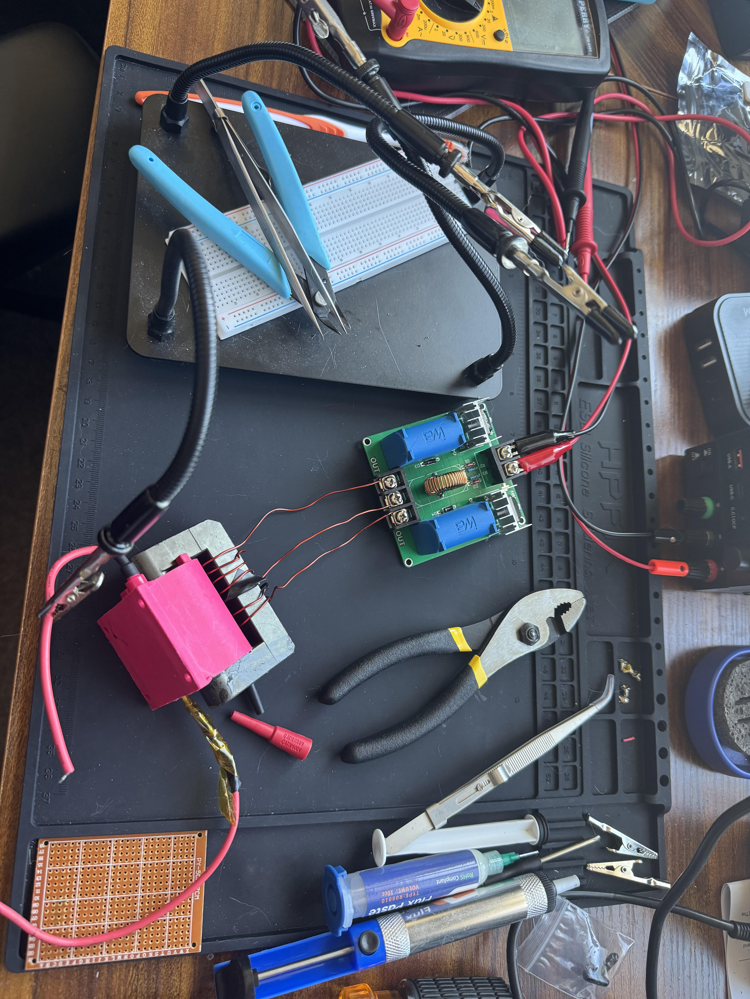
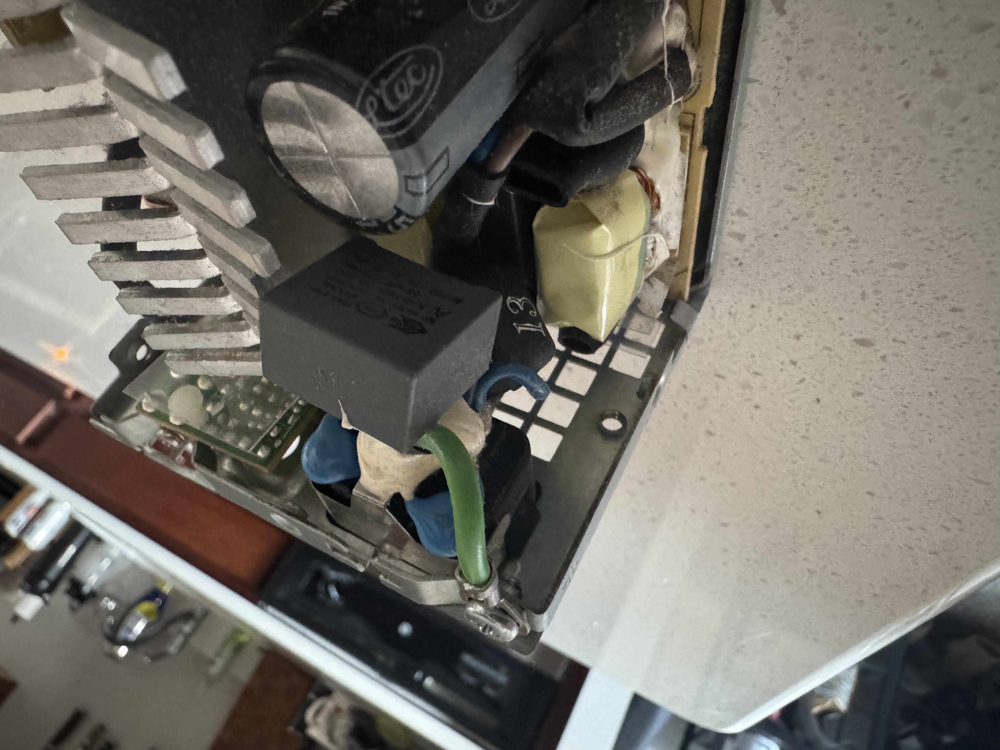

This project is actually one part of a future project that I am in the process of developing. This project entails assembling a high voltage driver capable of turning just a measly 12v into high voltage suitable for driving various high voltage experiments such as tesla coils etc. Read the following guide on high voltage safety practices. High Voltage Safety Manual
One of the most common types of circuits used for generating high voltage is the Zero Voltage Switching Driver circuit. The circuit functions as a form of an astable multivibrator also know as a Royer oscillator. One of the main differences is of course that it uses an LC tank circuit to produce sine waves instead of the typical square waves you normally see with a multivibrator. See below a circuit js simulation of a ZVS driver in action.
The ZVS driver gets its name since the mosfets turn on when the voltage accross them is near zero. This helps eliminate switching losses and emi. One of the most common ways to utilize a ZVS driver is to drive a flyback converter to get thousands of volts. It's interesting to note that the ZVS driver makes use of reasonance, to generate super high voltages. It is worth noting that technically the ZVS driver steps up both the voltage and current of the circuit. At first glance you might think that this would break the laws of thermodynamics, however since both voltage and current are 90 degrees out of phase almost all of this power is reactive. See below an image of the power triangle that shows the relationship between real and reactive power.

It's worth mentioning that due to the high voltage nature of this circuit it should be treated as extrememly dangerous. In fact this circuit is more than capable of instantly killing if handled improperly.
Here you can see a picture of the ZVS circuit that I put together. The ZVS circuit itself is from a kit for building a tesla coil, this kit came along with the included pcb as well as all of the required components.

I should mention the setup shown above is actually not my original setup. In my original setup, I used an old atx power supply that I bought of ebay. These power supplies are capable of suppling 30 to 45A of current continuous, so I thought that it would be more than cpaable of supplying the driver. However when I hooked this power supply up to the ZVS driver I got weak arcs at the flyback. After playing around with the setup I heard a loud pop in my power supply, it would seem that I damaged the supply as it no longer turns on. I opened it up to look at the damage and couldn't find any obvious issues. I could troubleshoot further but for the time being, I will be using this bench switch mode power supply that I got off of amazon. This one has current limiting ability, so I should be able to control the driver more effectively.

Below you can see a video of an arc being created at the output of flyback transformers primary. Although it may be a crude measurement based on the size of the arc if we assume it to be around 1.5cm then the voltage would be approximately 45000 volts. Since the turns on the primary is around 7. We can estimate the voltage on the secondary to be around 6500 volts. Of course in reality it would be a bit lower due primarily to core loses.
Anyhow I thought that this was a cool experiment. It's always fun to play with high voltage arcs. It was interesting learning more about high voltage reasonant supplies. I hope in the future I can use this driver for other high voltage projects.